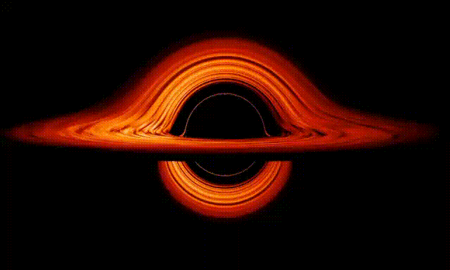
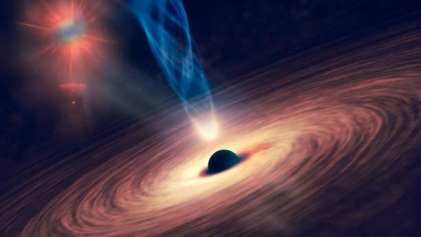

A black hole is a region of spacetime where gravity is so strong that nothing, including light or other electromagnetic waves, has enough energy to escape its event horizon. The theory of general relativity predicts that a sufficiently compact mass can deform spacetime to form a black hole.The boundary of no escape is called the event horizon. Although it has a great effect on the fate and circumstances of an object crossing it, it has no locally detectable features according to general relativity. In many ways, a black hole acts like an ideal black body, as it reflects no light. Moreover, quantum field theory in curved spacetime predicts that event horizons emit Hawking radiation, with the same spectrum as a black body of a temperature inversely proportional to its mass. This temperature is of the order of billionths of a kelvin for stellar black holes, making it essentially impossible to observe directly.
The no-hair theorem postulates that, once it achieves a stable condition after formation, a black hole has only three independent physical properties: mass, electric charge, and angular momentum; the black hole is otherwise featureless. If the conjecture is true, any two black holes that share the same values for these properties, or parameters, are indistinguishable from one another. The degree to which the conjecture is true for real black holes under the laws of modern physics is currently an unsolved problem.

When an object falls into a black hole, any information about the shape of the object or distribution of charge on it is evenly distributed along the horizon of the black hole, and is lost to outside observers. The behavior of the horizon in this situation is a dissipative system that is closely analogous to that of a conductive stretchy membrane with friction and electrical resistance—the membrane paradigm. This is different from other field theories such as electromagnetism, which do not have any friction or resistivity at the microscopic level, because they are time-reversible.
Because a black hole eventually achieves a stable state with only three parameters, there is no way to avoid losing information about the initial conditions: the gravitational and electric fields of a black hole give very little information about what went in. The information that is lost includes every quantity that cannot be measured far away from the black hole horizon, including approximately conserved quantum numbers such as the total baryon number and lepton number. This behavior is so puzzling that it has been called the black hole information loss paradox.
